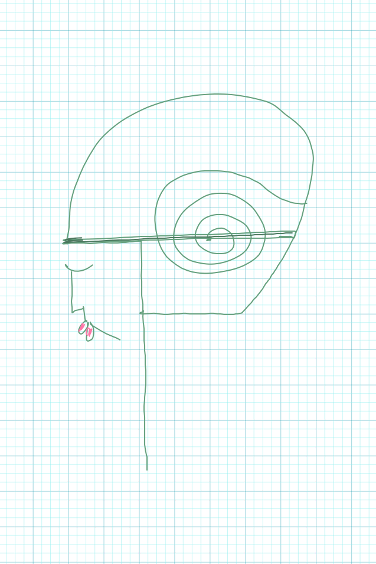

ĊUAĊ
A study of spiral, from bíseach to biseach.

MaterialThe ċuaċ is made from real wool. The wool is from the west of Ireland and smells of lanolin, the smell of sheep.
ProcessThe process has evolved from trial and error. Each ċuaċ has a similar shape, and an original signature. No two ċuaċs are the same, yet they contain...
ProductThe ċuaċ has yet to be productivised. If you would like to order a ċuaċ, take action now and feed back some info to inspire your very own.Commission a ĊUAĊ →